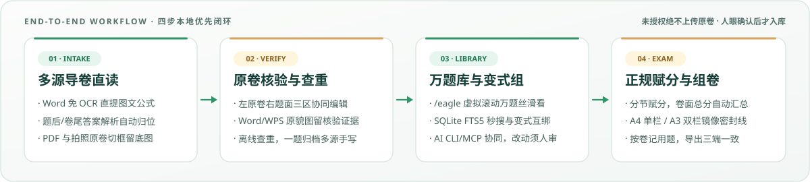

Word（.docx / .doc）双轨拆题与答案剥离
直接读取 OMML / MathType 公式和内嵌配图，自动分离紧跟题后或卷尾的【答案】【解析】，同时留存原貌 PDF 作核对依据。
面向数学教师与教研整理的桌面题库与正规组卷工作台。Word 试卷直读、PDF / 照片切题、原卷对照核验、离线查重、万题秒搜到 A4 / A3 双栏出卷，题库与原卷始终留在自己电脑上。
不上传你的私人试卷，不未经确认改动题面，每一步都保留原卷依据。

支持 Word（.docx/.doc）免 OCR 直读公式与配图、文字 PDF 自动切题、扫描件与照片框选切题。
左右对照原卷与学生手写错解，毫秒级离线查重并合并多份出处，人工点「通过」才入正式库。
SQLite FTS5 秒搜中英文与公式，支持 8 层自由文件夹树、变式题组与社区题包分享导入。
支持分节赋分、用题防撞车、A4 单栏与 A3 双栏密封线，屏幕预览、PDF 与 Word 三端一致。
采自桌面端实跑环境，覆盖录题、定位、对照、万题筛选与打印预览完整流程。
不花哨，但把老师日常录题、找题、组卷、备份最怕踩的坑一条一条补齐。
直接读取 OMML / MathType 公式和内嵌配图，自动分离紧跟题后或卷尾的【答案】【解析】，同时留存原貌 PDF 作核对依据。
题库里只保留唯一干净题卡，历次空白原卷、不同学生的手写错解挂入多标签证据栏；变式题支持互绑与一键替换。
支持 A4 单栏和标准 A3 横向双栏（奇偶页自动镜像密封线），自动记录历史用题并支持排除近期已用题，防止周测撞车。
公式缓存配合分段加载，上万道题快速拖动不卡顿；支持自由目录树与书本自定义章节接管，随时支持撤销。
支持将整理好的题包导出到题有据社区共享，也能从社区直接下载题包一键导回桌面题库，保留公式、配图与标签结构。
本机自动留存最近 10 份备份，只合并补缺不抹库；AI 助手可通过 CLI / MCP 协助整理，但绝不跳过人工核对私自改题。
免费开源软件，支持 Windows 10 / 11（64 位），安装后不依赖云账号即可离线使用。
推荐日常教研电脑下载安装版（带桌面快捷方式和卸载器）；受限电脑可选免安装便携压缩包，解压即用。
自动获取最新正式版、校验 SHA-256 哈希，并在覆盖升级前自动备份你本机的原有题库。
irm https://github.com/CEHNICA/question-bank-card/releases/latest/download/install.ps1 | iex
所有历史版本、校验文件（SHA256SUMS.txt）与完整源码归档均可在
GitHub Releases
核查。